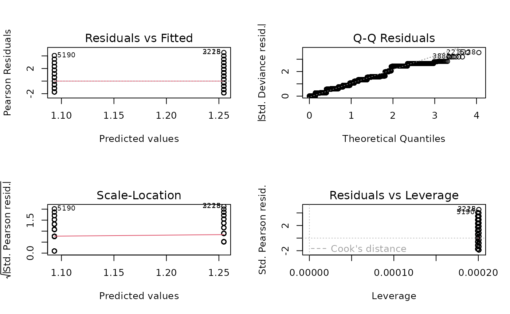
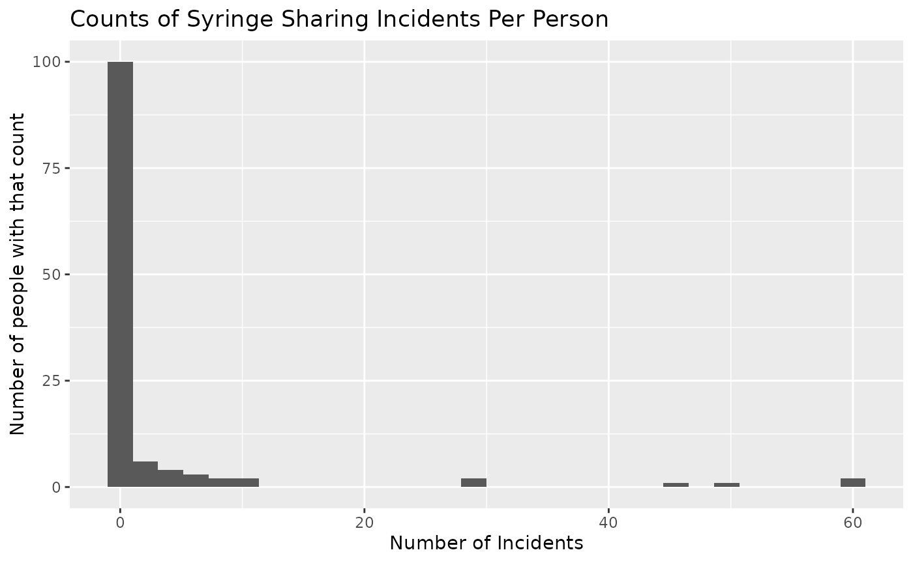
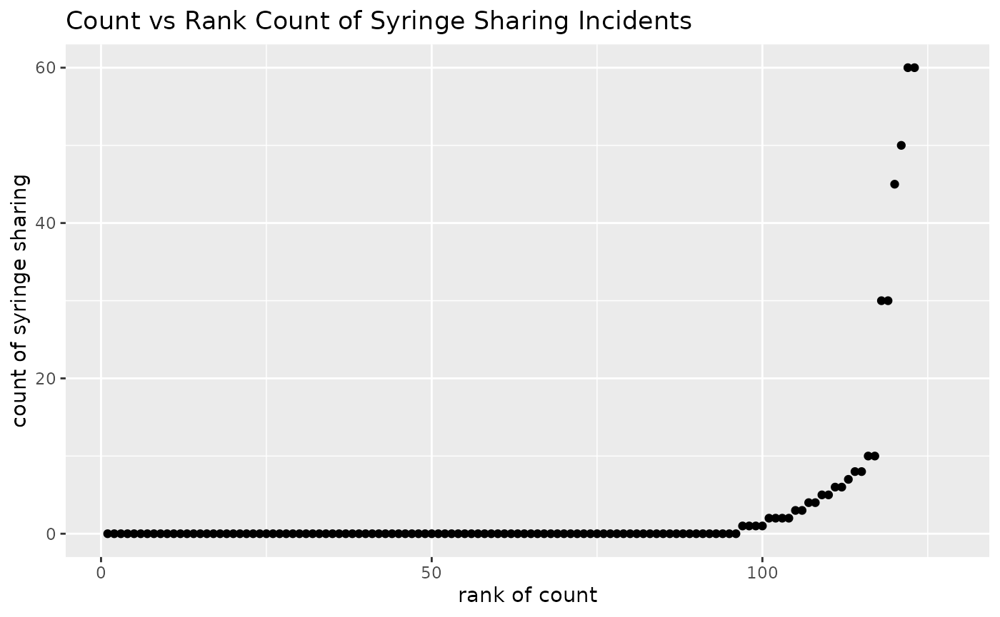
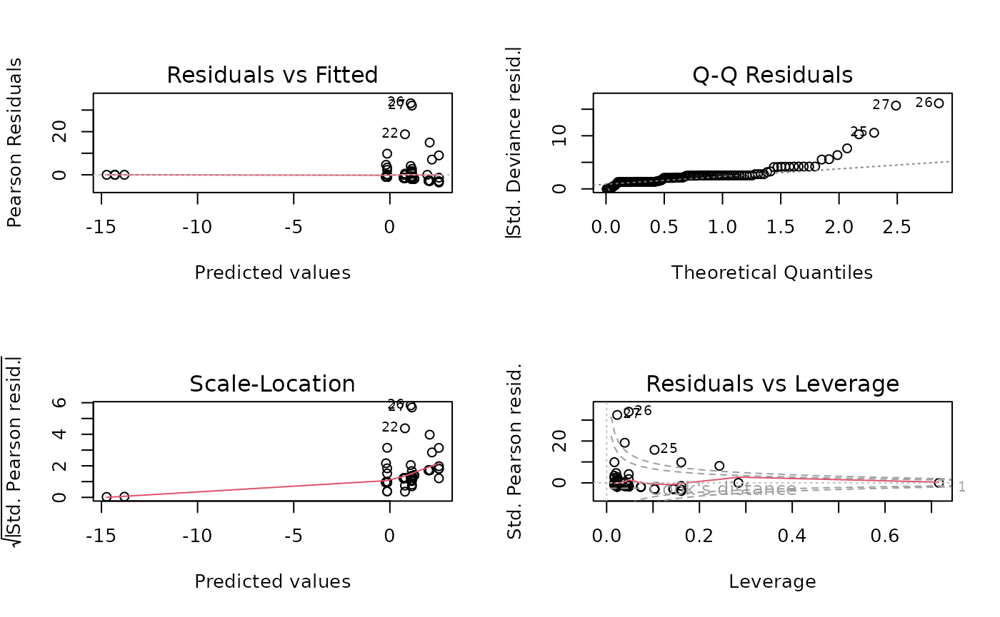

vignettes/session_lab.Rmd
session_lab.RmdLearning objectives
Exercises
## ── Attaching core tidyverse packages ──────────────────────── tidyverse 2.0.0 ──
## ✔ dplyr 1.1.2 ✔ readr 2.1.4
## ✔ forcats 1.0.0 ✔ stringr 1.5.0
## ✔ ggplot2 3.4.3 ✔ tibble 3.2.1
## ✔ lubridate 1.9.2 ✔ tidyr 1.3.0
## ✔ purrr 1.0.2
## ── Conflicts ────────────────────────────────────────── tidyverse_conflicts() ──
## ✖ dplyr::filter() masks stats::filter()
## ✖ dplyr::lag() masks stats::lag()
## ℹ Use the conflicted package (<http://conflicted.r-lib.org/>) to force all conflicts to become errors
set.seed(1)
N <- 10000
simdat <- data.frame(race = sample(c("white", "non-white"), N, replace = TRUE)) %>%
mutate(race = factor(race, levels = c("white", "non-white"))) %>%
mutate(y = rpois(N, lambda = ifelse(race == "white", 3.5, 3.0)))##
## Call:
## glm(formula = y ~ race, family = poisson(link = "log"), data = simdat)
##
## Coefficients:
## Estimate Std. Error z value Pr(>|z|)
## (Intercept) 1.254710 0.007564 165.88 <2e-16 ***
## racenon-white -0.161428 0.011137 -14.49 <2e-16 ***
## ---
## Signif. codes: 0 '***' 0.001 '**' 0.01 '*' 0.05 '.' 0.1 ' ' 1
##
## (Dispersion parameter for poisson family taken to be 1)
##
## Null deviance: 11041 on 9999 degrees of freedom
## Residual deviance: 10831 on 9998 degrees of freedom
## AIC: 39419
##
## Number of Fisher Scoring iterations: 5The critical threshold for rejection at p=0.05 is:
qchisq(0.95, df=1)## [1] 3.841459So we reject \(H_0\)
BEWARE OF MISSING DATA: THIS IS SAFER
## Analysis of Deviance Table
##
## Model 1: y ~ -1
## Model 2: y ~ race
## Resid. Df Resid. Dev Df Deviance Pr(>Chi)
## 1 10000 42527
## 2 9998 10831 2 31696 < 2.2e-16 ***
## ---
## Signif. codes: 0 '***' 0.001 '**' 0.01 '*' 0.05 '.' 0.1 ' ' 1
shared_syr)
library(readxl)
needledat <- read_excel("needle_sharing.xlsx")
summary(needledat$shared_syr)## Min. 1st Qu. Median Mean 3rd Qu. Max. NA's
## 0.000 0.000 0.000 2.976 0.000 60.000 5
var(needledat$shared_syr, na.rm=TRUE)## [1] 106.5978Some recoding:
suppressPackageStartupMessages(library(dplyr))
needledat_cleaned <-
mutate(needledat,
homeless = factor(homeless, levels = 0:1, labels = c("No", "Yes")),
sex = factor(sex, levels = c("M", "F"), labels = c("Male", "Female")),
ethnicity = factor(ethn)
) %>%
select(all_of(c("shared_syr", "ethnicity", "sex", "homeless")))##
## Attaching package: 'table1'## The following objects are masked from 'package:base':
##
## units, units<-
table1(~ ., data = needledat_cleaned)| Overall (N=128) |
|
|---|---|
| shared_syr | |
| Mean (SD) | 2.98 (10.3) |
| Median [Min, Max] | 0 [0, 60.0] |
| Missing | 5 (3.9%) |
| ethnicity | |
| AA | 36 (28.1%) |
| Asian | 1 (0.8%) |
| Filipino | 2 (1.6%) |
| Hispanic | 10 (7.8%) |
| Indian | 1 (0.8%) |
| Indian & White | 1 (0.8%) |
| White | 76 (59.4%) |
| White & Hispa | 1 (0.8%) |
| sex | |
| Male | 97 (75.8%) |
| Female | 30 (23.4%) |
| Missing | 1 (0.8%) |
| homeless | |
| No | 63 (49.2%) |
| Yes | 61 (47.7%) |
| Missing | 4 (3.1%) |
Create a histogram number of syringe uses
Create a scatter plot of number of syringe uses versus rank of number of syringe uses
library(ggplot2)
ggplot(needledat, aes(shared_syr)) +
geom_histogram() +
labs(title = "Counts of Syringe Sharing Incidents Per Person") +
xlab("Number of Incidents") +
ylab("Number of people with that count")## `stat_bin()` using `bins = 30`. Pick better value with `binwidth`.## Warning: Removed 5 rows containing non-finite values (`stat_bin()`).
library(dplyr)
mutate(needledat, rnk = rank(shared_syr, ties.method = "first")) %>%
ggplot(aes(x = rnk, y = shared_syr)) +
geom_point() +
labs(title = "Count vs Rank Count of Syringe Sharing Incidents") +
xlab("rank of count") +
ylab("count of syringe sharing")## Warning: Removed 5 rows containing missing values (`geom_point()`).
Even though we know it is a bad fit
fit.pois <- glm(shared_syr ~ sex + ethn + homeless,
data = needledat,
family = poisson(link = "log"))
summary(fit.pois)##
## Call:
## glm(formula = shared_syr ~ sex + ethn + homeless, family = poisson(link = "log"),
## data = needledat)
##
## Coefficients:
## Estimate Std. Error z value Pr(>|z|)
## (Intercept) 0.72332 0.14462 5.002 5.69e-07 ***
## sexM -0.92480 0.12133 -7.622 2.50e-14 ***
## sexTrans -15.08655 773.78384 -0.019 0.9844
## ethnFilipino -14.52887 510.68253 -0.028 0.9773
## ethnHispanic 1.46454 0.16004 9.151 < 2e-16 ***
## ethnIndian -14.10111 773.78385 -0.018 0.9855
## ethnIndian & White -15.02591 773.78384 -0.019 0.9845
## ethnWhite 0.06064 0.13348 0.454 0.6496
## ethnWhite & Hispa 0.86195 0.39872 2.162 0.0306 *
## homeless 1.28543 0.12664 10.150 < 2e-16 ***
## ---
## Signif. codes: 0 '***' 0.001 '**' 0.01 '*' 0.05 '.' 0.1 ' ' 1
##
## (Dispersion parameter for poisson family taken to be 1)
##
## Null deviance: 1621.9 on 120 degrees of freedom
## Residual deviance: 1364.8 on 111 degrees of freedom
## (7 observations deleted due to missingness)
## AIC: 1483.8
##
## Number of Fisher Scoring iterations: 12## Warning: not plotting observations with leverage one:
## 17, 38, 72, 86